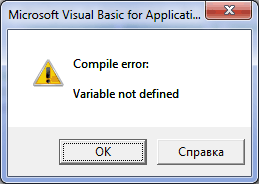
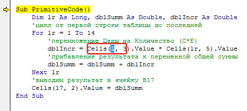
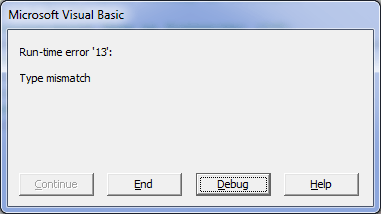
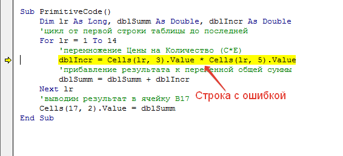
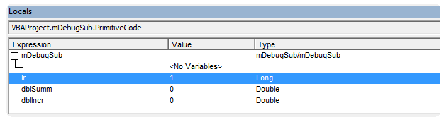
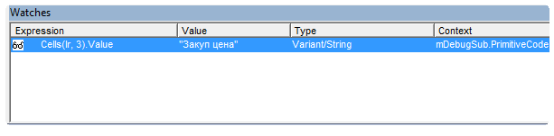
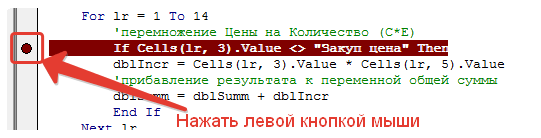

Пример таблицы и кода (35,5 KiB, 1 078 скачиваний)
Пример таблицы и кода (35,5 KiB, 1 078 скачиваний) Отлов ошибок и отладка кода VBA
Очень часто начинающие работать в VBA сталкиваются с различными ошибками, которые выдает код в момент выполнения. Если не знать как поступить в данном случае – то очень сложно будет исправить код быстро, а то и вообще невозможно будет определить причину ошибки без помощи более "продвинутых" пользователей. Новички зачастую делают правки наугад, что может порождать иные ошибки, а это в свою очередь не только затрудняет поиск первоначальной ошибки, но и может привести к невозможности исправить код вообще. Поэтому в этой статье я решил описать как производить отладку кода и определять ошибки.
Чтобы описанное в статье можно было сразу опробовать в практике советую скачать файл пример:
Пример таблицы и кода (35,5 KiB, 1 078 скачиваний)
Что будет рассмотрено:
Помимо этого в конце статьи можно скачать файл с кодами ошибок VBA и их расшифровками.
Исходные данные
Допустим, имеется простая таблица
И код, который должен пройтись по каждой строке таблицы, перемножить цену (столбец Цена) на количество (столбец Продажи шт), просуммировать перемноженные данные и вывести результирующую сумму в ячейку В17:
Option Explicit Sub PrimitiveCode() Dim lr As Long, dblSumm As Double, dblIncr As Double 'цикл от первой строки таблицы до последней For lr = 1 To 14 'перемножение Цены на Количество (C*E) dblIncr = Cells(l, 3).Value * Cells(lr, 5).Value 'прибавление результата к переменной общей суммы dblSumm = dblSumm + dblIncr Next 'выводим результат в ячейку B17 Cells(17, 2).Value = dblSumm End Sub
|
Option Explicit Sub PrimitiveCode() Dim lr As Long, dblSumm As Double, dblIncr As Double 'цикл от первой строки таблицы до последней For lr = 1 To 14 'перемножение Цены на Количество (C*E) dblIncr = Cells(l, 3).Value * Cells(lr, 5).Value 'прибавление результата к переменной общей суммы dblSumm = dblSumm + dblIncr Next 'выводим результат в ячейку B17 Cells(17, 2).Value = dblSumm End Sub |
Отладка кода в момент появления ошибки
Если посмотреть на код выше, то опытный программист VBA сразу поймет, что в таком виде код работать не будет – не выполнится и одна строка. Сразу появится ошибка:

Ошибка означает, что внутри кода есть переменная, которая ранее не была объявлена.
Сама переменная, которую VBA считает не объявленной будет выделена:

Подробнее об этой ошибке и её причинах можно почитать в статье: Variable not defined или что такое Option Explicit и зачем оно нужно?
Если кратко, то переменной l нет среди объявленных переменных(Dim l As) и мы не можем её использовать. В данном случае это опечатка и там должна быть lr, а не l. Исправляем переменную и код будет выглядеть так:
Sub PrimitiveCode() Dim lr As Long, dblSumm As Double, dblIncr As Double 'цикл от первой строки таблицы до последней For lr = 1 To 14 'перемножение Цены на Количество (C*E) dblIncr = Cells(lr, 3).Value * Cells(lr, 5).Value 'прибавление результата к переменной общей суммы dblSumm = dblSumm + dblIncr Next 'выводим результат в ячейку B17 Cells(17, 2).Value = dblSumm End Sub
|
Sub PrimitiveCode() Dim lr As Long, dblSumm As Double, dblIncr As Double 'цикл от первой строки таблицы до последней For lr = 1 To 14 'перемножение Цены на Количество (C*E) dblIncr = Cells(lr, 3).Value * Cells(lr, 5).Value 'прибавление результата к переменной общей суммы dblSumm = dblSumm + dblIncr Next 'выводим результат в ячейку B17 Cells(17, 2).Value = dblSumm End Sub |
С виду код теперь выполнен правильно и ошибок вызывать не должен. Однако, если его попытаться выполнить опять получим ошибку – на этот раз ошибку типов данных(Type Mismatch):

В момент появления главное нажать Debug, а не End (если будет желание прочитать про тип ошибки подробнее – можно еще нажать Help, текст будет на английском). VBA подсветит желтым строку, вычисления или операции в которой вызывают ошибку:

Теперь самый важный этап – необходимо определить причину ошибки. С виду все хорошо – одна ячейка перемножается на другую. Без опыта сложно сходу понять, что это ошибка типов данных, хоть VBA прямо об этом говорит(Type Mismatch – в переводе "Несовпадение типов"). Поэтому самое надежное в этом случае – это определить значение каждой составляющей той строки, в которой возникла ошибка. В случае с кодом выше можно воспользоваться двумя методами:
Окна Locals и Watches
Так же для отслеживания значений переменных очень удобно использовать окно Locals и окно Watches.
Окно Locals
Окно Locals отображает все локальные переменные, задействованные в выполняемой в настоящий момент процедуре:

Как видно в этом окне отображается имя переменной, её тип и значение. Все хорошо, но в этом окне отображаются исключительно локальные переменные, объявленные на уровне модуля. Переменных других модулей, объявленные как Public и используемые в текущей процедуре там не отображаются. Подробнее про видимость переменных можно узнать в статье: Что такое переменная и как правильно её объявить?
Окно Watches
Окно Watches представляет большую ценность – в это окно можно просто "перетащить" нужную переменную или объект и в этом окне будут отражены все данные об имени переменной, её типе и текущем значении:

Теперь рассмотрим чуть подробнее как перетаскивать в это окно данные. На примере кода выше:
Все, данные по переменной загружены и доступны для просмотра. По сути все умеют это делать - процесс очень схож с обычным перемещением файлов и папок по рабочему столу. Выделили и с зажатой левой кнопкой мыши перенесли в нужное место.
В чем еще один плюс этого окна – в этом окне можно оставлять эти значения и просматривать в моменты пошаговой отладки только занесенные в это окно переменные(про пошаговую отладку будет рассказано ниже). Если вдруг какая-то переменная/объект стали не нужны для постоянного отслеживания их данных – можно удалить их из окна Watches, чтобы не мешалась. Для этого выделяем переменную-правая кнопка мыши – Delete Watch. Так же можно поиграть с иными пунктами, наибольший интерес из которых на мой взгляд, представляет пункт Edit Watch. После его нажатия появится окно
Самые основные пункты в этом окне, важные для отладки:
If lr = 10 Then 'код End if
If lr = 10 Then
'код
End if
Тогда надо будет выделить в строке If lr = 10 Then само условное выражение lr = 10, перенести её в окно Watches, выделить строку в окне Watches с этим выражением, нажать правую кнопку мыши и выбрать Edit Watch. Выбрать в окне Break Then value Is True. Теперь как только переменная lr достигнет значения 10(т.е. обрабатываться будет 10-я строка таблицы) – код остановится и строка с выражением будет выделена желтым. Можно будет проанализировать другие переменные или продолжить выполнение кода в пошаговом режиме(см.далее).
Пошаговая отладка кода
После знакомства с отладкой кода при возникновении ошибки работать с пошаговой отладкой будет проще.
Что такое вообще пошаговая отладка?
Это просмотр этапов выполнения кода строка за строкой.
Для чего это может быть нужно?
Как делать пошаговую отладку? Все просто: устанавливаете курсор в любом месте внутри кода и нажимаете клавишу F8 (либо выбрать в меню Degub-Step Into). Теперь при каждом нажатии клавиши F8 код будет выполнять одну строку кода за другой в той очередности, в которой они расположены в процедуре. Если внутри процедуры будет вызов второй процедуры или функции – код пошагово выполнит и её и затем вернется в основную процедуру.
Так же хочу привести еще пару сочетаний клавиш, которые удобно применять при пошаговой отладке:
Точки останова
Но куда чаще бывает нужно не просто весь код пройти пошагово, а начать пошаговое выполнение только начиная с какой-либо одной строки, чтобы не мотать строк 40 кода(да еще с циклами) ради достижения одной какой-то строки. Еще точки останова очень полезны при отладке событийных процедур(вроде Worksheet_Change, Worksheet_BeforeDoubleClick, событий элементов форм и т.п.), т.к. они в большинстве своем содержат аргументы и выполнить по F8 их просто невозможно и выполняются они только при наступлении самого события, которые они призваны обработать.
Чтобы дать понять VBA на какой строке необходимо будет остановится необходимо установить курсор мыши в любое место нужной строки и нажать F9 или Debug-Toggle Breakpoint. Строка будет выделена темно-красным цветом.
Это еще называется установкой точки останова. Убрать точку останова можно так же, как она была установлена – F9 или Debug-Toggle Breakpoint. Так же точку основа можно установить с помощью мыши: для этого необходимо в области левее окна с кодом напротив нужной строки один раз щелкнуть левой кнопкой мыши:

Теперь можно запустить код любым удобным способом (в отладке это как правило делается клавишей F5 или с панели: Run-Run Sub/UserForm). Как только код дойдет до указанной точки останова он остановится и строка будет подсвечена желтым. Дальше можно либо продолжить выполнение в пошаговом режиме(нажимая F8), либо(проверив значения нужных переменных и объектов) нажать опять F5 и код продолжит выполняться автоматически, пока не выполнится или не достигнет другой точки останова. Самих же точек останова может быть сколько угодно и расположены они могут быть в любой процедуре или функции.
Следует помнить, что после закрытия файла с кодом точки останова не сохраняются и при следующем открытии книги их необходимо будет установить заново, если это необходимо.
Ошибок нет, но код все равно не выполняется
Еще хочу добавить, что ошибки могут появляться не всегда, даже если они есть. Бывает и так, что код выполняется без ошибок, но однако либо выполняется не так, либо вообще ничего не делает. Как правило причин две:
Один из примеров того, для чего может применяться обработчик ошибок можно найти в статье: Как из Excel обратиться к другому приложению. Там данный обработчик необходим, чтобы проверить открыто ли уже приложение Word. Если открыто - то ошибка не возникнет. Если же закрыто - то будет ошибка. И этот момент как правило и отслеживается. Я расставил подробные комментарии в коде, чтобы было более понятно что к чему:
Sub Check_OpenWord() Dim objWrdApp As Object On Error Resume Next 'необходимо, чтобы на первой же строке код не выдал ошибку при закрытом Word 'пытаемся подключится к объекту Word Set objWrdApp = GetObject(, "Word.Application") 'если Word закрыт - обязательно возникнет ошибка 429, 'указывающая на то, что невозможно подключиться к объекту Word 'при этом переменная objWrdApp будет равняться Nothing, т.к. значение не удалось присвоить If objWrdApp Is Nothing Then 'так же можно использовать и такую строку: 'If Err.Number = 429 Then 'если ошибка 429 - значит Word не запущен - надо создавать новый 'создаем новый экземпляр Set objWrdApp = CreateObject("Word.Application") 'делаем приложение видимым. По умолчанию открывается в скрытом режиме objWrdApp.Visible = True Else 'приложение открыто - выдаем сообщение MsgBox "Приложение Word уже открыто", vbInformation, "Check_OpenWord" End If End Sub
|
Sub Check_OpenWord() Dim objWrdApp As Object On Error Resume Next 'необходимо, чтобы на первой же строке код не выдал ошибку при закрытом Word 'пытаемся подключится к объекту Word Set objWrdApp = GetObject(, "Word.Application") 'если Word закрыт - обязательно возникнет ошибка 429, 'указывающая на то, что невозможно подключиться к объекту Word 'при этом переменная objWrdApp будет равняться Nothing, т.к. значение не удалось присвоить If objWrdApp Is Nothing Then 'так же можно использовать и такую строку: 'If Err.Number = 429 Then 'если ошибка 429 - значит Word не запущен - надо создавать новый 'создаем новый экземпляр Set objWrdApp = CreateObject("Word.Application") 'делаем приложение видимым. По умолчанию открывается в скрытом режиме objWrdApp.Visible = True Else 'приложение открыто - выдаем сообщение MsgBox "Приложение Word уже открыто", vbInformation, "Check_OpenWord" End If End Sub |
Для чего вообще это нужно? Ведь можно создавать новый экземпляр. А дело в том, что не всегда правильно создавать новый - куда правильнее зачастую подключиться к ранее открытому, чем плодить новые экземпляры и захламлять диспетчер задач.
Тему обработки ошибок я здесь пока не раскрываю полностью, т.к. это не на один абзац. В одной из следующий статей постараюсь более подробно рассказать как и где их лучше применять и как правильно, а когда лучше вообще воздержаться от их использования.
Конечно, статья не описывает способы устранения ошибок - это просто невозможно. Только известных типов ошибок в VBA более 3 тысяч. Все их упоминать бессмысленно. Целью статьи было помочь начинающим найти строку с ошибкой и рассказать как производить отладку кода при необходимости. А все остальное придет с опытом. Однако на всякий случай я решил выложить файл Excel с описанием большей части ошибок, которые могут возникнуть. В файле указан номер ошибки, описание на английском и описание на русском. Причин ошибки может быть множество, поэтому нет однозначных рекомендаций по устранению каждой из них. Все зависит от данных и от самого кода.
Ошибки VBA с описанием (152,0 KiB, 2 022 скачиваний)